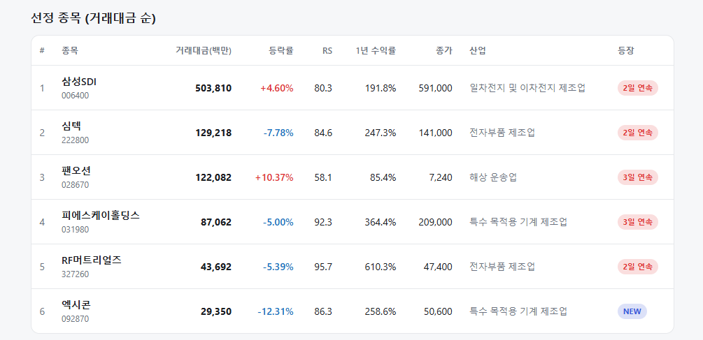
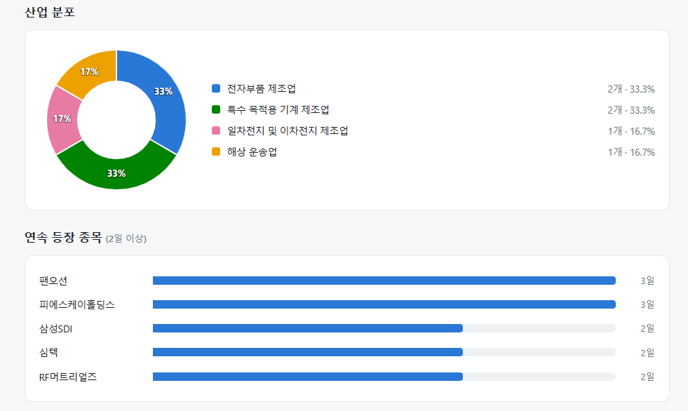
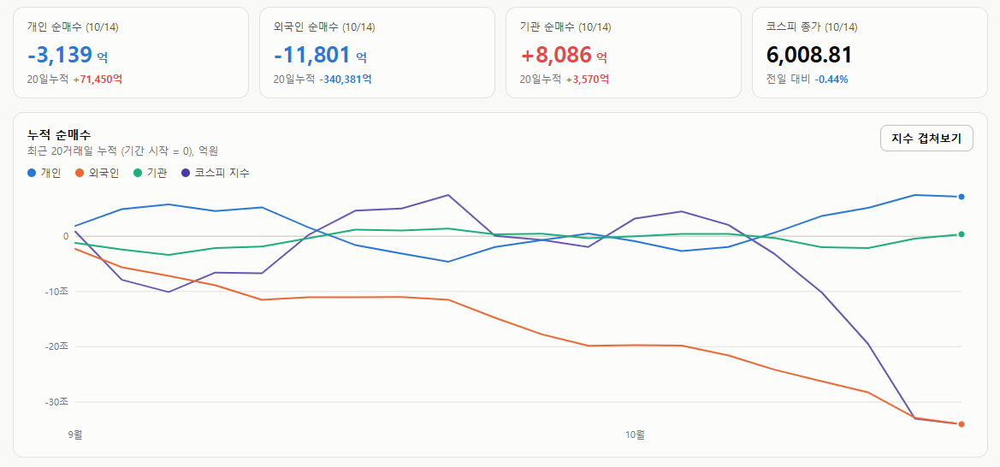
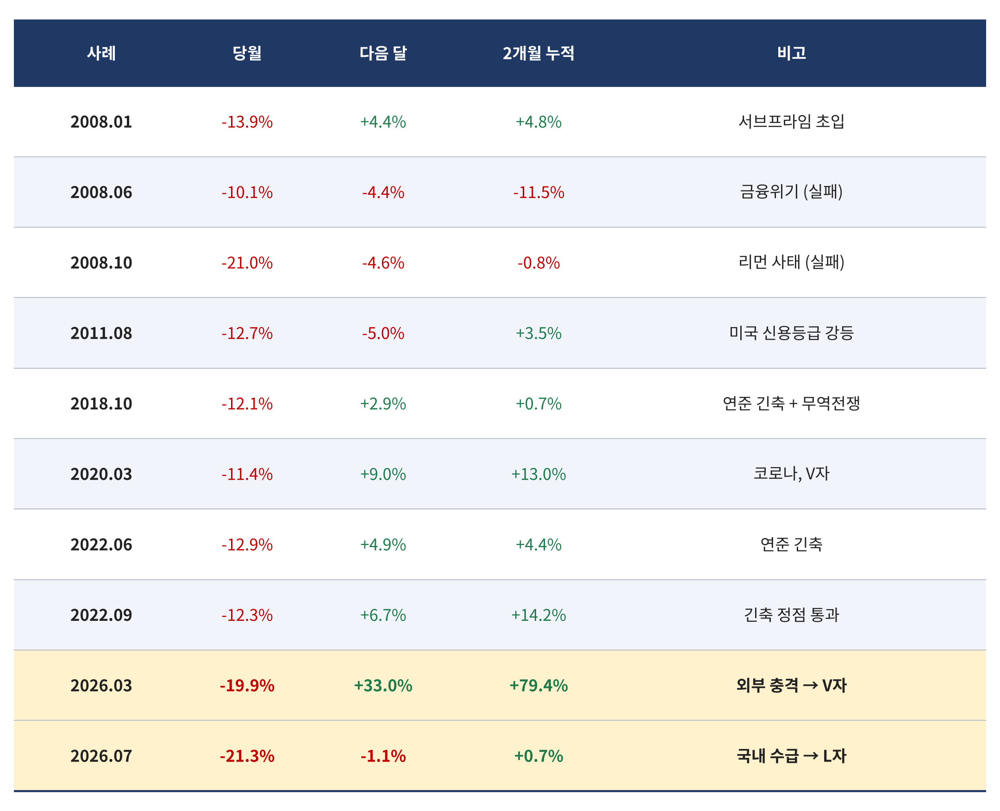
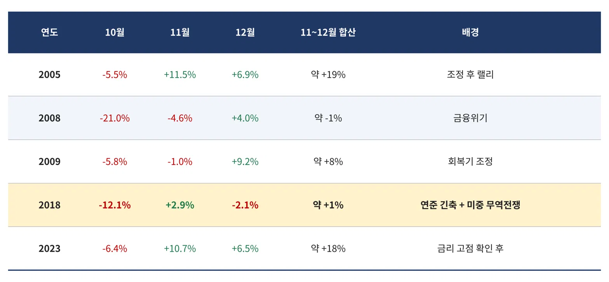
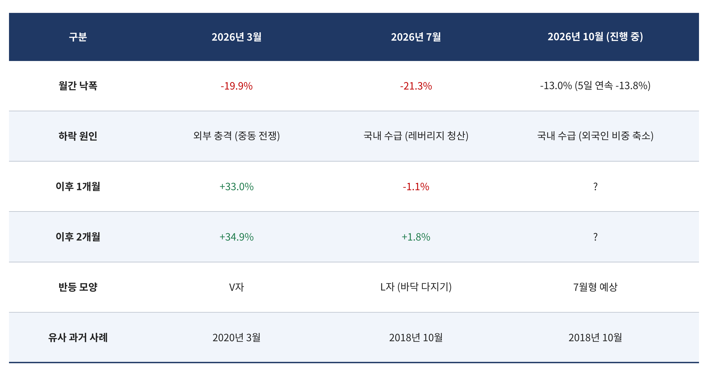

매일의 주도주 정리를 위해 기록합니다.
연속적으로 나온 종목들 또는 상승 후 조정받는 종목 위주로 리서치 해보시면 좋을 것 같습니다.


*오늘 퀀트픽은 없습니다.
연속종목으로 팬오션(3회), 피에스케이홀딩스(3회), 삼성SDI(2회), 심텍(2회), RF머트리얼즈(2회) 출현했습니다.
피에스케이홀딩스, 심텍, RF머트리얼즈의 경우 최근 반등장에서 상승률이 좋았던 종목들입니다.
지금은 소부장 섹터 전반적으로 조정중이지만 충분한 조정을 거친 후 상승 가능성을 높게 보고 있습니다.
#주도섹터
해운사 및 2차전지
주요 업종 및 종목: 해운사(+5.85%), 전기제품(+2.94%), 철강(+2.67%), 도로와철도운송(+2.61%), 팬오션, 삼성SDI(+5.18%), LG에너지솔루션(+2.20%).
분석: 해운사 업종이 +5.85% 급등하며 업종 상승률 1위를 차지했습니다. 물류 인프라 관련주인 철강 및 도로·철도운송 섹터도 동반 강세를 보였습니다. 또한 2차전지 대형주인 삼성SDI(+5.18%)와 LG에너지솔루션(+2.20%)이 지수 하방을 든든하게 받치며 전기제품 업종 상승을 주도했습니다.
#조정섹터
금융(손해보험·은행)
주요 업종 및 종목: 손해보험(-5.08%), 생명보험(-3.79%), 은행(-2.65%), 백화점과일반상점(-2.24%), 신한지주(-4.61%), 삼성생명(-3.71%), KB금융(-2.03%).
분석: 시장의 변동성을 방어하던 금융주 전반에서 차익 실현 매물이 거칠게 쏟아졌습니다. 손해보험(-5.08%) 및 생명보험(-3.79%) 업종이 하락 최상단을 장악하며 지수 하락을 부추겼습니다.
#수급동향

코스피 지수는 -0.44% 하락한 6,008.81로 마감하며 심리적 마지노선인 6,000선을 위태롭게 수성했습니다. 반면 코스닥 지수는 -1.57% 하락한 823.88을 기록하며 약세를 면치 못했습니다.
유가증권시장에서 외국인 투자자는 1조 1,801억 원(20일 누적 -34조 381억 원)을 순매도하며 대형주 중심의 이탈을 지속했습니다. 기관 투자자는 8,086억 원(20일 누적 +3,570억 원)을 순매수하며 방어에 나섰고, 개인 투자자는 3,139억 원을 순매도했습니다.
5일 연속 -13.8%, 25년(2002~현재) 데이터로 본 다음 두 달
코스피가 10월 13일까지 5거래일 연속 하락하며 -13.8%를 기록했습니다. 5일 연속 하락에 누적 -13% 이상이 겹친 건 지난 20년간 2020년 3월과 2011년 8월, 두 번뿐이었습니다. 2002년부터 현재까지 코스피 데이터로 직접 확인했습니다.
① 반등은 있었다 — 다만 첫 2주는 아니었다
5거래일 연속 급락 상위 10건의 평균 수익률은 D+5 -0.8%, D+20 +3.2%, D+60 +8.2%입니다. -10% 이상 3건만 보면 D+60 +19.5%로 더 강합니다. 낙폭이 클수록 중기 반등이 강했습니다.
그런데 D+5는 모든 경우에 마이너스이고 D+10도 거의 0입니다. 급락 직후 1~2주는 반등이 아니라 바닥을 다지는 구간이고, 수익은 D+20부터 나옵니다.
② 월간 -10% 이후 — 승률 60~80%, 실패는 2008년에 집중

2002년 이후 월간 -10% 이상 급락은 10건입니다. 그 다음 달에 오른 건 6건, 2개월 누적으로는 8건입니다. 실패한 2건(2008년 6월, 10월)은 모두 금융위기 — 신용시장이 전염된 유일한 국면입니다. 지금 CCC 스프레드가 2022년 이후 최고지만 BB·투자등급은 아직 조용합니다. 그 선이 유지되는 한 2008년은 아닙니다.

10월만 떼어 보면 -5% 이상 빠진 해가 5번이고, 11~12월에 플러스였던 게 4번입니다. 2005년과 2023년은 11월에만 +11%가 나왔습니다. 실패한 1번은 역시 2008년입니다.
③ 어떤 모양으로 오를까 — 올해 3월과 7월이 답을 준다

가장 중요한 단서는 올해 안에 있습니다. 2026년은 이미 월간 -20%가 두 번 있었고, 그 뒤가 완전히 달랐습니다.
3월 -19.9%는 4월 +33.0%로 돌아왔습니다. 중동 전쟁이라는 외부 충격이 걷히자 V자였습니다. 7월 -21.3%는 8월 -1.1%, 9월 +1.8%였습니다. 레버리지 청산이라는 국내 수급이 원인이었고, 두 달째 바닥을 다지는 L자였습니다.
이번 10월의 원인은 외국인 비중 축소와 자사주 공백 — 국내 수급입니다. 7월형입니다. 2018년 10월(-12.1%, 연준 긴축 + 무역전쟁 + 외국인 매도)도 같은 유형이었고, 11~12월 합산 +1%에 그치다 이듬해 1월에 +9.2%가 나왔습니다. 그래서 V자를 기대하기보다 바닥을 다진 뒤 연말~1월에 올라오는 모양이 기본 시나리오입니다. 2개월 기대 수익은 +4% 안팎이고, 그 이상은 실적시즌이 만들어야 합니다.
25년 데이터의 결론은 세 줄입니다. 급락 뒤 반등은 60~80% 확률로 왔고, 실패는 신용이 전염된 2008년뿐이었으며, 국내 수급이 원인일 때는 V자가 아니라 두세 달의 바닥 다지기였습니다.
그래서 지금 할 일은 바닥을 맞히는 게 아니라 확률 우위에 서는 것입니다. 10월 말까지 나눠서 자리를 잡고, 반등이 더디다고 떠나지 않는 것.
통계는 급락 뒤 첫 2주가 아니라 그 다음 두 달을 가리키고 있고, 그 두 달의 승률은 80%입니다.
오늘 하루도 수고하셨습니다.